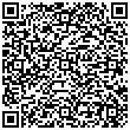

넥슨플레이>QR스캐너>QR코드 촬영>바이오 인증 진행 후
QR 로그인 버튼을 클릭해주세요.

 유효시간: 03:00
유효시간: 03:00
QR 로그인 이용 가이드
넥슨플레이 안내 >- 1. 모바일기기로 QR코드를 촬영해주세요.QR 스캐너 위치 보기
- 2. 바이오인증의 인증 승인 페이지에서 지문인식을 해주세요. (또는 Face ID)
- 3. 인증완료 후 [QR 로그인]을 클릭해주세요.